Finalistas
A etapa final do título contou com seleção por parte da comissão julgadora independente de apenas 20 projetos entre as 105 iniciativas registradas nas categorias “Inovação em processos internos” e “Inovação em serviços e políticas públicas”, propostas por 19 diferentes órgãos da administração direta e indireta. As secretarias municipais de Saúde, de Inovação e Tecnologia, do Verde e do Meio Ambiente, de Assistência e Desenvolvimento Social, da Educação, da Pessoa com Deficiência e das Subprefeituras foram algumas das pastas que tiveram o maior número de programas inscritos. Já a sociedade civil contribuiu com 38 indicações de propostas que poderão vir a ampliar a qualidade de vida na cidade, como parte da categoria “Inovação aberta”, das quais foram selecionadas 10 iniciativas.
Categoria 1
Capacitação aos funcionários da recepção das unidades da Coordenadoria Regional de Saúde Leste/SMS-SP. Acolhimento: Olhar humanizado e qualificado na perspectiva do Sistema Único de Saúde. Secretaria/órgão: SMS
Como resposta ao número de reclamações na ouvidoria relativas ao atendimento prestado aos usuários na recepção da Coordenadoria Regional de Saúde Leste, foi realizada capacitação dos funcionários da unidade. Foram inscritos 1202 escriturários administrativos (divididos em 42 turmas com 30 participantes, em média) de 120 unidades/serviços das 7 Supervisões Técnicas de Saúde que compõem a Coordenadoria Regional de Saúde Leste, onde trabalham 12.000 funcionários. Um dos resultados foi a redução de 29% das reclamações registradas no período de Janeiro a Março de 2018 em relação ao mesmo período de 2017.
Professor autor da sua formação em serviço. Secretaria/órgão: SME
O objetivo da iniciativa é a participação efetiva das professoras e da Coordenadora Pedagógica em todas as etapas do Projeto Especial de Ação (formação continuada em serviço), de acordo com os questionamentos apresentados pelos educadores, pelas crianças e demais usuários da escola. Cada Grupo de Estudo do PEA elabora suas questões e persegue as respostas, numa clara demonstração de autoria, culminando com a alteração significativa do Projeto Político Pedagógico da Escola em função da comunidade atendida.
Plano Estratégico de Tecnologia da Informação e Comunicação. Secretaria/órgão: SMIT
Cada órgão municipal executava a gestão da tecnologia de uma forma própria, por vezes sem um planejamento adequado. A definição do plano estratégico, em conjunto com os planos geral e setoriais, as iniciativas de capacitação de servidores e a publicação de orientações técnicas, possibilitou que todas as áreas de TI soubessem quais objetivos precisam cumprir em conjunto e quais iniciativas patrocinar para que o uso da tecnologia na Prefeitura evoluísse do patamar puramente operacional para estratégico, de forma mais igualitária, participativa e transparente, com aplicação de métricas próprias e indicadores.
Implantação do Processo Eletrônico com o Sistema Eletrônico de Informações - SEI. Secretaria/órgão: SMIT
A Prefeitura gera cerca de 340 mil processos administrativos por ano. Em janeiro de 2015, implantou-se o Sistema Eletrônico de Informações (SEI), criado e cedido gratuitamente pelo TRF da 4ª Região, cuja finalidade é substituir o papel pelo ambiente eletrônico para gerar e tramitar processos. Desde então, já foram migrados para o sistema eletrônico mais de 500 tipos de processos. Em agosto de 2018, 85% dos processos administrativos já são gerados em ambiente eletrônico. O projeto consiste na disseminação do uso do SEI, com ações de desenvolvimento tecnológico, comunicação, capacitação e suporte, garantindo que 100% dos processos administrativos passem a ser criados e tramitados de forma eletrônica, em substituição ao papel, até dezembro de 2018.
Avaliação das atividades de biossegurança e gerenciamento de resíduos laboratoriais: o uso do ciclo PDCA para diminuição de riscos no trabalho. Secretaria/órgão: SMS
A avaliação dos processos de trabalho em um laboratório é crucial para manter a qualidade, a confiabilidade, diminuir riscos de acidentes e manter o correto gerenciamento dos resíduos laboratoriais. No Núcleo de Laboratório de Zoonoses e Doenças Transmitidas por Vetores a Comissão de Biossegurança elaborou processos de averiguação de maneira que as atividades relativas à biossegurança e gerenciamento dos resíduos envolvesse todos os funcionários de forma contínua e não focada apenas em uma comissão, favorecendo o olhar diferenciado e diminuindo os vícios das ações rotineiras. Assim, foi criado o Supervisor da Biossegurança e, para tornar essa atividade mais receptiva e descontraída, surgiu a figura do “Xerife do Mês” da Biossegurança. Todo processo obedece a um ciclo de PDCA, visando o aprimoramento contínuo das atividades. Como resultado registramos apenas 9 acidentes em 14 anos e nenhum nos últimos 3 anos.
Triagem Avançada: gestão eficiente e uso racional de recursos voltados ao manejo da fauna silvestre paulistana. Secretaria/órgão: SVMA
Os Centros de Triagem de Animais Silvestres (CETAS) são unidades reconhecidas pelo Ibama para a realização do recebimento, manejo e destinação de animais silvestres de diferentes espécies. Visando aumentar a eficiência do serviço, foi elaborada uma forma de realizar esta triagem, possibilitando que este processo decisório seja feito antes mesmo da entrega dos animais em uma de suas unidades de atendimento. Chamada de triagem avançada, este novo protocolo interno tem possibilitado uma considerável melhoria do serviço, otimizando o atendimento prestado ao munícipe, reduzindo custos operacionais, a partir do uso de novas tecnologias e conceitos, até então pouco explorados neste segmento.
Implantação do PMO SPObras - Escritório de Empreendimentos. Secretaria/órgão: SPObras
O projeto visa alcançar a excelência em gestão dos empreendimentos da SPObras, criando processos e ferramentas de gestão em conjunto com os servidores. A equipe foi capacitada em Gestão de Projetos. Foi implantado um Sistema de Gestão de Empreendimentos desenvolvido pelo setor de TI da empresa para o monitoramento e controle dos empreendimentos e melhor gestão do portfólio, o que deu transparência das informações aos servidores.
SisdamWeb. Secretaria/órgão: SMS
Software que facilita processos internos da Uvis Jaçanã. O sistema cruza dados extraídos dos bancos dos sistemas de notificação e dos laboratórios, disponibilizando em uma única página o processo de planejamento e execução de ações no combate e prevenção a endemias. Também atende a demandas administrativas de controle de estoque, emissão de memorandos, controle de estabelecimentos com recorrência em penalidades aplicadas em inspeções sanitárias e afins. O software diminuiu o tempo gasto e a demanda de servidores em processos de trabalho, como nas fichas de notificações de agravos, mapeamento de setores ambientais e unidades básicas de referência. Facilitou a logística do trabalho em campo com a criação e numeração de modo on-line de memorandos, protocolos e controle de estoque.
Revisão dos Indicadores Sociais e Instrumentais de monitoramento e avaliação da Vigilância Socioassistencial. Secretaria/órgão: SMADS
Reformulação dos indicadores/instrumentais de monitoramento e avaliação da vigilância socioassistencial pela Coordenadoria do Observatório da Vigilância Socioassistencial (COVS), elaborados de forma participativa (1123 servidores e conselho da área consultados) para os serviços diretos e parceiros de SMADS. O projeto caminhou pelas fases de diagnóstico; revisão dos indicadores; revisão dos instrumentais de coleta; publicação da Portaria nº 39/SMADS/17. Resultados: facilidade de transparência, redução de burocracia e retrabalho; redução do tempo de gestão da informação; menor valor agregado do dado; uso de ferramentas estatísticas/BI; melhor subsídio às áreas correlatas e intersetoriais da assistência em tempo real; governança sobre vigilância de riscos e vulnerabilidade com identificação de perfis, situações e contextos de riscos presentes nos territórios.
Planejamento de Pessoal: uma iniciativa quantitativa, qualitativa e prospectiva. Secretaria/órgão: SG
Análise quantitativa e qualitativa da necessidade de pessoal, identificação de gargalos, pactuação de ações e identificação de boas práticas em gestão de pessoal. A implementação desta inovação contemplou as seguintes fases: a) priorização do tema, criação da área e composição da equipe; b) desenvolvimento do ferramental técnico; c) apontamento qualificado pelas secretarias; d) reuniões prospectivas com cada secretaria; e) análises e construção de relatórios com distintas finalidades. Os resultados são: maior transparência e compartilhamento de dados e análises, subsídio gerencial à tomada de decisão, construção participativa da agenda de gestão de pessoas e identificação de boas práticas.
Categoria 2
Manual de Sustentabilidade para Edificações Públicas - Projetos e Obras. Secretaria/órgão: SIURB
O manual tem como objetivo estabelecer critérios e parâmetros sustentáveis para orientação quanto às melhores práticas do uso racional dos recursos naturais no âmbito da Administração Pública Municipal, atendendo à Meta 33 do Programa de Metas da Cidade de São Paulo 2017-2020 (alinhada aos ODS/ONU). O manual procura consolidar práticas relevantes de projeto já adotadas pelo Departamento de Edificações da SIURB, cuja meta é implantar 100% dos critérios estabelecidos para os novos projetos de edificações públicas como escolas, hospitais, centros culturais, bibliotecas, UBS, UPAs.
Fab Lab Livre SP como Política Pública. Secretaria/órgão: SMIT
Política pública municipal que privilegia zonas de maior vulnerabilidade social e objetiva disseminar a “cultura maker” por todas as regiões da cidade de São Paulo, a fim de possibilitar o contato com novas ferramentas de informação e capacitação dos usuários das comunidades locais. Caracteriza-se, portanto, como ações que promovem habilidades e competências para o uso de novas tecnologias, de maneira a garantir o empoderamento tecnológico da população.
API-SOF. Secretaria/órgão: SF
Disponibiliza dados de execução orçamentária do município em API (interface que liga aplicações com as mais diversas formas de linguagem, propiciando uma simplificação em suas integrações), permitindo ao público interno o desenvolvimento de novas ferramentas gerenciais e ao público externo uma interface que lhe permite criar suas próprias ferramentas de consulta em consonância com os princípios de transparência na gestão pública. Há experiências na administração de outros setores que a utilizam dentro de ferramentas de gestão.
Dronepol. Secretaria/órgão: SMSU
O objetivo era implantar a tecnologia de monitoramento por drones para auxiliar e subsidiar ações de segurança da Guarda Civil Metropolitana e Defesa Civil, contudo, devido à variedade de possibilidades de uso da ferramenta, passou-se a apoiar outros órgãos da administração pública municipal, como a SVMA no monitoramento de parques e outras áreas de interesse ambiental, a SEHAB no mapeamento das áreas de interesse para habitação, a SMC na cobertura e cálculo de estimativa de público nos grandes eventos, as Prefeituras Regionais no mapeamento e monitoramento de ocupações irregulares, a CET no monitoramento do trânsito, bem como outros órgãos parceiros em trabalhos de inteligência e operações da Polícia Militar. Contando com uma equipe de operadores especializados, o Dronepol já contabilizou desde sua criação, em maio de 2017, 1.651 vôos, ou 267,5 horas de vôo.
Cultura Inclusiva. Secretaria/órgão: SMPED
O projeto Cultura Inclusiva permite que as pessoas com deficiência tenham acesso à cultura em diversos pontos da Cidade de São Paulo. O projeto possui mensalmente um calendário de atividades e espetáculos com tradução para libras, audiodescrição, estenotipia, micro-ônibus acessível, com espaço para transportar até cinco usuários em cadeiras de rodas, e recepcionistas com deficiência. O Cultura Inclusiva atende ao público de todas as idades nos teatros, bibliotecas, museus, casas de cultura e centros culturais. Em paralelo, incentivamos que artistas com deficiência se inscrevam nos editais e cadastros da SMC, para que possam fazer parte do Circuito Municipal de Cultura.
Empreenda Fácil. Secretaria/órgão: SMIT / SF / Prodam
Simplifica o processo de abertura, licenciamento e regularização de empresas. Permite o licenciamento de empresas de baixo risco em média de cinco dias, reduzindo a burocracia para a abertura de novos empreendimentos na cidade. O processo anterior levava mais de 100 dias e exigia a peregrinação entre órgãos municipais, estaduais e federais, agora reunidos em uma mesma plataforma. O novo sistema registrou a abertura de mais de 83 mil empresas e mais de 223 mil pedidos de análise de viabilidade. Os negócios de baixo risco representam 80% da atividade econômica da cidade. O programa também beneficia a abertura de empresas de alto risco, de filiais e a regularização de empreendimentos, que também tiveram seus processos simplificados.
Programa Coopera Jabaquara. Secretaria/órgão: SUB Jabaquara
A Prefeitura do Jabaquara observou a necessidade de criar um plano de gestão onde fosse possível atender a toda população em igualdade e qualidade. Então, dividiram o Jabaquara em 12 setores e uma vez por mês um setor recebe todo o serviço de zeladoria. Em janeiro, a população tem conhecimento de quais setores, local e data serão atendidos. São oferecidos todos os serviços de zeladoria urbana e parcerias com ações de cidadania como: saúde, entretenimento, esporte e lazer. Com essa ação, a atual gestão superou metas e finalizou 4000 sacs em 2017. Após um ano, como resultado, reduziu os pontos de descarte irregular de lixo e ampliou a zeladoria, sendo a regional que mais fiscaliza as prestadoras de serviço, trazendo benefícios concretos e resolução de antigos problemas.
Selo de Acessibilidade Digital. Secretaria/órgão: SMPED
O Selo de Acessibilidade Digital certifica sítios e portais eletrônicos que cumprem com critérios de acessibilidade estabelecidos nacional e internacionalmente. Os responsáveis por sítios e portais eletrônicos podem requerer o Selo à Secretaria Municipal da Pessoa com Deficiência que, em conjunto com a Comissão Permanente de Acessibilidade, avaliará a acessibilidade das páginas submetidas segundo critérios e procedimentos estabelecidos na Portaria SMPED-GAB nº 08/2018. Os requerentes cujos sítios ou portais eletrônicos avaliados cumpram com os referidos critérios são contemplados com o Selo de Acessibilidade Digital.
Descomplica SP. Secretaria/órgão: Prodam
Propõe um novo padrão de atendimento ao cidadão, descentralizado e mais ágil. O projeto piloto foi implantado junto à subprefeitura regional de São Miguel Paulista e oferece mais de 300 serviços disponibilizados por 11 secretarias municipais, além de parceiros de outras esferas de governo, como o Detran/SP e os Correios. A unidade dispõe também do Descomplica SP Digital, onde se oferece um atendimento personalizado para realizar serviços disponibilizados em meio eletrônico. Desde o início de operação, em 12 de março, realizou mais de 100 mil atendimentos e registra índice de satisfação superior a 98% pelos usuários dos serviços.
Agentes formadores de Governo Aberto. Secretaria/órgão: SMRI / São Paulo Aberta
Sensibilização e formação para cidadãos municipais, conselheiros locais e servidores públicos em conceitos, ferramentas e iniciativas de governo aberto. Os agentes formadores são selecionados por edital e apresentam propostas de temas para realizar oficinas gratuitas de capacitação nos eixos de governo aberto (transparência, accountability, participação e inovação tecnológica) e demais temas transversais. Visa empoderar a população local (com foco na juventude e populações vulneráveis) para participar ativamente das ações de governo e fazer uso das ferramentas disponíveis, por exemplo: como solicitar informações públicas por meio da LAI, acompanhar o orçamento público, etc. Desde o início do projeto (nov/2015), o programa já contou com 2 edições (a 3ª está em fase inicial), com atuação de 130 agentes, que formaram mais de 20.383 pessoas nas áreas de abrangência de cada uma das 32 Subprefeituras.
Regulamento
Este é o regulamento de 2018 no qual os selecionados foram premiados em dezembro/2018. Este edital esta encerrado.
Júri
ETAPAS DE AVALIAÇÃO
Os projetos inscritos passaram por três etapas de avaliação:
A primeira foi a homologação dos projetos em conformidade com o edital.
Na segunda etapa, foi realizada a avaliação pela banca técnica interna de acordo com os seguintes critérios: inovação, resultados, participação, eficiência, transparência, continuidade, replicabilidade e parcerias. Como resultado, foram selecionados 10 finalistas por categoria.
Na terceira etapa, todos os projetos fizeram uma apresentação para a Comissão Julgadora, constituída por especialistas em diversas áreas, sem vínculo com a gestão pública municipal e com total autonomia e soberania para suas decisões. Por fim, a Comissão Julgadora se reuniu e deliberou sobre as Menções Honrosas e os Vencedores.
Conheça a Comissão Julgadora:
Carminha Cruz
Escola do Parlamento
Marcos Pó
UFABC
Cibele Franzese
FGV

Marcelo Marchesini
Insper
Marina Cançado
Flow Brasil
André Macieira
Elo Group
Diogo Quitério
ICE
Letícia Piccolotto
Brasil Lab
Carlos Torres
CEBRAP
Gabriela de Breláz
UNIFESP

Miriam Ascenso
Fundação Brava
Galeria

 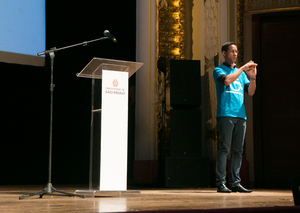
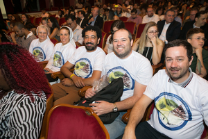
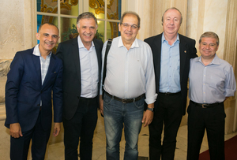
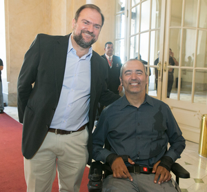
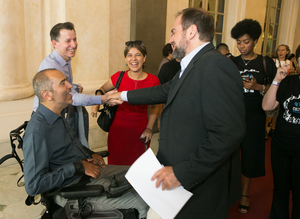
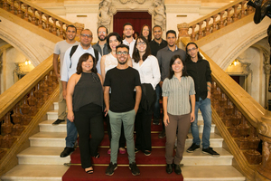
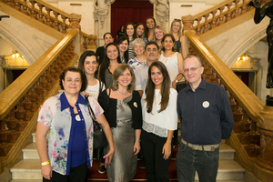
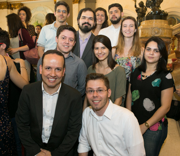
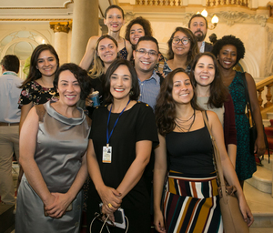
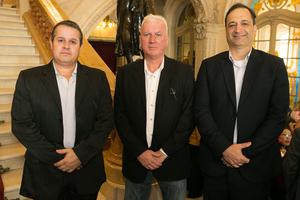
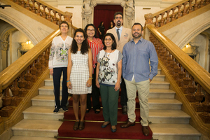
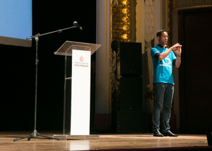
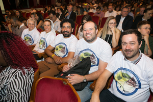
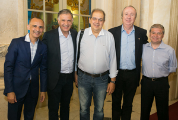
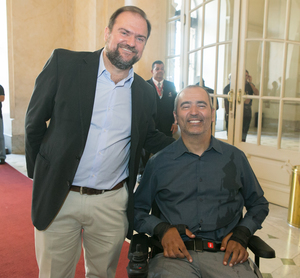
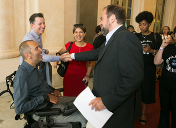
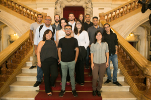
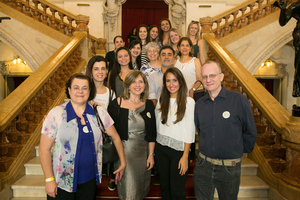
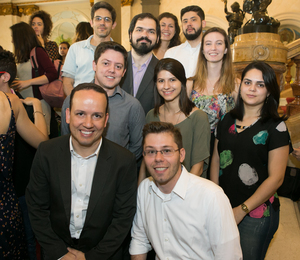
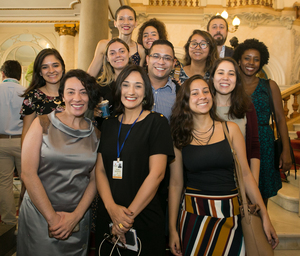
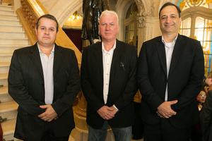
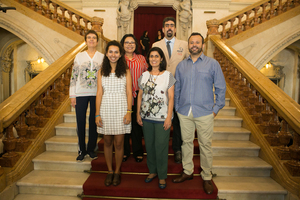
 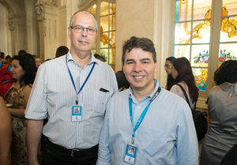
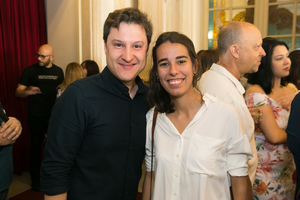
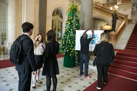
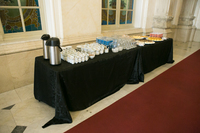
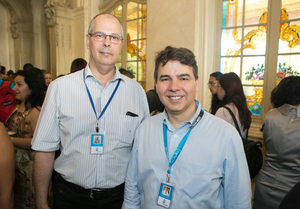
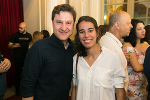
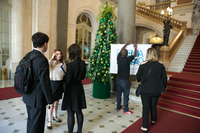
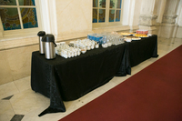
 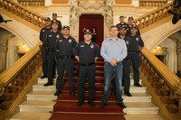
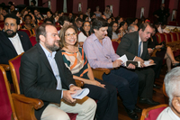
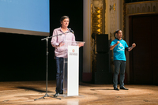
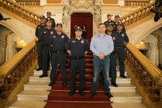
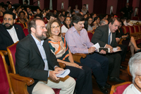
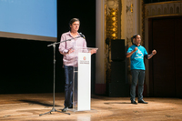
 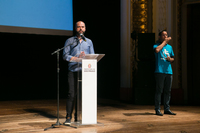
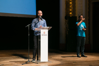